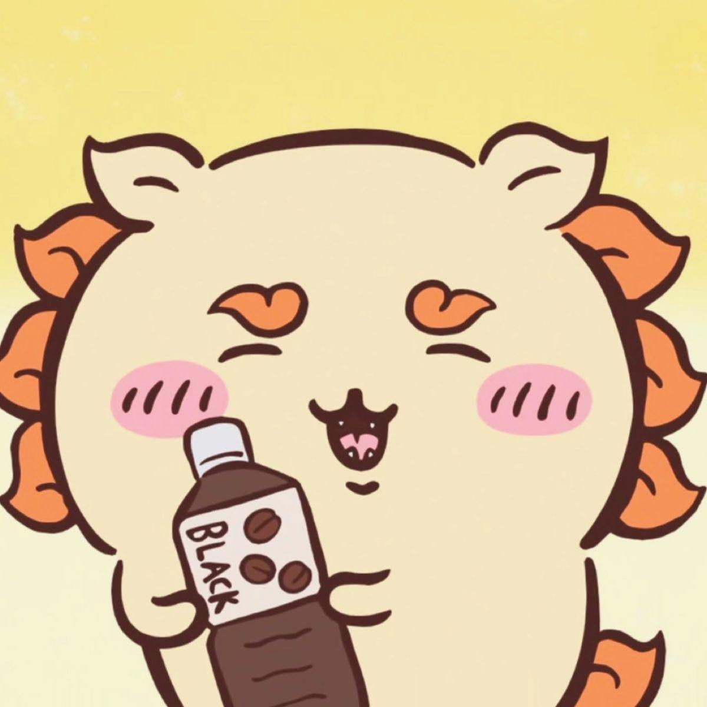

El león-perro de Okinawa
Shisa シーサー
Un personaje trabajador y muy tierno de Chiikawa.
- Está inspirado en el shisa, el guardián tradicional de las islas Ryukyu (Okinawa).
- Es un chiikawa con forma de leoncito-perro, de cuerpo amarillo claro y melena naranja.
- Trabaja en la tienda de ramen Rou junto a su maestro, Ramen Yoroi-san.
